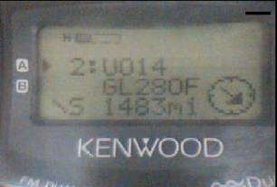

APRS
Tiny Web Pages
Bob Bruninga, WB4APR
Presented at the 13th ARRL/TAPR
DCC 20-24 Sept 2000, Orlando FL
Although APRS has revolutionized packet radio, it is also one step
ahead of the next great leap in wireless technology which is handheld wireless
access to Web pages. Although cell
phones and pagers are just beginning to capitalize on this next wave of
technology, APRS already has it!
Take a look at the screen of your Kenwood TH-D7 or TM-D700... What you see are hundreds of Tiny Web Pages
of information!
In this
context, these radios already display over 200 pages of station information, 32
pages of Messages and 20 pages on the DX list on your dashboard or in the palm of
your hand. The purpose of this paper is
to show how we can
exploit
this display capability to give mobile and handheld APRS users wireless access
to a wealth of on-line information. This
paper will cover the following topics:
+
The
existing 252 Tiny Web Pages that can be displayed
+
How
we added Satellite tracking and schedule data using “push” techniques
+
How
we expanded to dozens of other categories based on “query” techniques
+
The
formats for using the DX list to display Tiny Web Pages
Photo 1. This photo shows W4HFZ’s mobile APRS
installation. Using the Kenwood APRS
mobile data radio, even without a laptop, he has access to hundreds of pages of
display information. Now we are adding
Tiny Web Pages and whole new databases to these displays.
EXISTING
STATION PAGES (using “push” technology)
First I
will review the appearance of the conventional usage of these Tiny Web
Pages. These existing pages can be
considered to use “push” technology, in the sense that you do not have to
request them. Just turning on your radio
and monitoring for a few minutes will update these 252 Tiny Web Pages
automatically in your radio. In the
following examples, I will use the screen of the TH-D7 HT to illustrate the
Tiny Web Page. The TM-D700 is similar
but the pages are larger and contain more text, so by using the HT in these
examples you will see the worst case display scenario. The STATION pages follow 5 basic
formats. The first page is just the list
of stations:
STATION
LIST
+--------------+ The Station list
shows three calls at a time and you can
| 1:WB4APR
| scroll up or down the list
through the entire 40
| 2:WU2Z |
| 3:KB2ICI
|
+--------------+
On
selecting any station, you can cycle through 4 additional pages:
STATUS
PAGE ICON DISTANCE LAT/LONG CSE/SPD/COMMENT
+--------------+ +--------------+ +--------------+ +--------------+
|
1:WB4APR | |
1:WB4APR | | 1:WB4APR
| | 1:WB4APR |
| To
| for XMAS |
| 16.4mi -> | | W 76 29.11
| | cse284Ýs055m |
+--------------+ +--------------+ +--------------+ +--------------+
Yet,
these 4 formats are not limited to only Mobiles, but ANY station or
object. Even in conventional APRS we use
these pages every day to look at these kinds of information:
+
CALLSIGN
and SSID
+
Station
Type (Fixed, Digi, Moving, THD7, TMD700, Mic-E, WX etc)
+
Station
ICON (Over 300 but only the most common 16 are graphical)
+
Grid
Square
+
Distance
and Bearing from your present location
+
Location
to nearest 60 feet (Latitude/Longitude)
THE
5TH CUSTOM PAGE
In
addition, each of these stations has additional information on its 5th page
depending on the type of station as shown below:
STATION TYPE DISPLAYS
------------
-----------------------------------------------------
HOME STATION XMTR Power, Antenna Height, Antenna
gain, Directivity
WX STATION Wind
Direction and speed, Temp and Rain in last hour
MOBILES
Station type, Course and Speed, and comment
OBJECTS
Who posted it, course and speed, comments, etc
SATELLITES Uplink and downlink frequencies, and
present Doppler
HURRICANES
Who posted it, Wind Speeds, pressure, Course and Speed
PAGE
SELECTION AND MESSAGE PAGES
We can SELECT
these pages by moving forward or backward in the list or by setting the
POSITION LIMIT so that we capture only stations within X miles of our current
location. Thus we have complete control
over our initial selection of these STATION Tiny Web Pages. Further, we can use standard APRS queries to
query ANY station to report its pages or we can directly query any of these
stations for additional information about their station or operation. These responding Tiny Web Pages are in the
form of two page messages. Typical Query
Responses from APRSdos stations look like this on the
D7's Tiny Web Pages:
1st
MESSAGE PAGE 2nd MESSAGE
PAGE:
+--------------+ +--------------+
| □>WB4APR | | □>WB4APR |
Response to a QUERY DIRECTS lists all
| Dir= WU2Z |
| K3FOR N8PK | stations heard direct by WB4APR
| K4HG KH2Z |
| KB2ICI W4 |
+--------------+ +--------------+
+--------------+ +--------------+
| □>WB4APR | | □>WB4APR |
Response to a QUERY HEARD shows number
| Hrd KB2ICI | | 2 17 16
8 | of packets per hour for the
last 12 hours
| 15 23 9
| | 14 23
4 |
+--------------+ +--------------+
+--------------+ +--------------+
| □>WB4APR | | □>WB4APR |
Response to a QUERY TRACE shows the path
| Path= WB4A | |
>K3ATI-12> | from WB4APR to
requesting station
| PR-11>N8PK | |
K3XY-3>KB2 |
+--------------+ +--------------+
DX
LIST
In
addition to the Station list and the Message list, the radios also have the DX
LIST which is used to capture DX spots as monitored from any DX cluster
Frequency. These pages are 10 deep by
two wide and display all the useful information provided in these DX
spots. Unlike the other pages, however,
these pages are volatile and are lost on each power down. This is usually not a problem due to the
real-time value of these posts. It is
the volatility of these DX LIST pages that make them attractive for some Tiny
Web Page applications.
SATELLITE
TRACKING PAGES and APRSdata.EXE
One of the
first extensions of this Tiny Web Page concept (still using “push” technology)
was to use the APRS network to post satellite tracking data to all mobiles and
handhelds whenever one of the FM satellites comes into view. This is done by regional copies of my
APRSdata.exe program that can transmit this information as a moving object to
all stations within range. These Objects
then provide the users with everything they need to know about the satellite
right on their HT's Tiny Web pages as shown below:
+--------------+ +--------------+ Satellite-in-view PAGE
|
1:AO27 | |
1:AO27 | Showing Up and Down freqs
plus doppler
| 145.85 -2 |
| FM18RX |
| 435.795 +6 | | *
1028mi -> |
+--------------+ +--------------+
+--------------+ +--------------+
|
1:AO27 | | 1:AO27 |
Shows current position and its
| N 38
59.11 | |
OBJECT | course and speed so you can tell
| W 76
29.11 | |
c247 s999 | if it is approaching or departing
+--------------+ +--------------+
By
watching the Range page, or the amount of Doppler, the handheld user can tell
when he can work the satellite. When the
satellite gets to within about 1000 miles, you can usually work it from the
mobile or the HT with your whip antenna.
SATELLITE
SCHEDULES
But
since these satellite objects are only usable if the user happens to be on the
air at the time, the APRSdata program also provides a
single Satellite Schedule every 10 minutes indicating all satellites that will
be in view in the next 80 minutes. Since
these schedules are repeated, it was decided not to displace good data in the
POSITION or MESSAGE lists, but to write these schedules to the volatile DX
LIST. These pages, although somewhat
formatted to match the format of a typical DX spot can be used for displaying
almost any kind of information. They are
ideal for this scheduling application.
Here is how these satellite schedules appear on the DX LIST:
+------------+
| UO22@1435 | as listed in the D7's DX list showing all FM
satellites
| SO35@1453 | expected in the next 80 minutes
| UO14@1532 |
+------------+
+----------------------------+
|
1:UO22@1435 SATS | Here is the same
info displayed on the D700
| UO14@1443 | which can display four satellites worth
of
| KO25@1455 SO35@ | schedule data on one screen.
| 1510 |
+----------------------------+

Photo 2. The left photo is just one of the 4 Tiny Web
Pages that alerts the user that UO-14 is in view and is 1483 miles to the
Southeast. Others show the Up and Down frequencies, position and direction it is headed. The right photo shows the Satellite Schedule
for the next 3 satellites as it appears on the DX list.
GENERAL
PURPOSE TINY WEB PAGES
The
satellite Tracking Objects and 80 minute Schedules were just one of the first
applications for the APRS Tiny Web Pages.
As soon as we saw the power of this technique to PUSH information
to the users, we realized that there could be an infinite depth of information
that could be made available to users ON DEMAND. Just like the real WEB, users transmit
QUERIES to the APRS system and the data is returned in any of the above variety
of formats. All it takes to provide this
service is someone in each major APRS area to run a copy of APRSdata.exe on an
old PC connected to a TNC. Users in the
area need no a-priori information to use the system. It will respond to Queries sent to the
generic callsign of QDOS. The following two lists, then, summarize the
information available to local users via their Tiny Web Pages. First there is the information already
available on every APRS network:
+
The
location, range and bearing of the last 40 APRS stations around you
+
The
location, range and bearing of all DIGIpeaters in
range
+
The
local WEATHER including wind speed, direction, rain and temp
+
ANY
APRS bulletins
+
Any
APRS mail (think of this as Email)
+
REAL
one-line EMAIL from the radio TO anywhere
Next is
the new data added to the network by local APRSdata servers.
+
A
Satellite Schedule every 10 minutes covering the next 80 minutes
+
Satellite
positions every 1 minute when in view
+
Direction
and range to the satellite from YOUR location
+
Satellite
Uplink and Downlink Frequencies
+
Approximate
Satellite Doppler for tuning
Finally
are all the new data added to APRSdata and now
available on demand by users from any local station running APRSdata
information server. Just send a Message
to QDOS with these Keyword Queries:
+
HOSP Nearest Hospital
+
RS Nearest Ham Radio Stores
+
NWR Nearest NOAA WX Radio xmtrs
and freqs
+
NWS Nearest Nation WX service sites
+
VOICE Nearest wide area Travelers VOICE repeaters
+
ATV Nearest ATV repeater or Shuttle
retransmission repeater
+
CRASH Nearest old Aircraft CRASH sites (to avoid
errors during SAR)
+
CAMP Nearest Campground
+
FD Nearest Field Day Site and talk in freq
+
CLUB Nearest Ham Radio Club and meeting schedule
+
NET Nearest Net and frequency
Other
data files that have been suggested:
+
PD = Police Station (Local/Municipal) location
and telephone number
+
SP = State Police Station/Barracks locations
and a telephone number
+
EOC = EOC Locations and local government
OEM freq.
+
BBS = List of local 2M packet BBS,
location, freq., etc.
The
following examples show the how some of this information is delivered to the
TH-D7 handheld display in response to a Query.
The first screen is the 10 second “immediate" screen that
summarizes the data the instant the packet comes in. After that, it is stored in the STATION LIST
along with the last such 40 items. Each
such ITEM has actually 5 "Tiny-Web-Pages" of detail. Only the first two are shown here. The others show exact LAT/LONG, and CSE/SPEED
and other data.
IMMEDIATE
PAGE RECALL PAGE
+--------------+ +--------------+ In response to a CLUB query
|
AARC | |
1:AARC | The ▲ is an actual ICON graphic
| 3rd
Thurs | |
FM18RX | and the -> is a compass rose
|
147.105 | | ▲ 13.6mi -> | showing the direction
+--------------+ +--------------+
+--------------+ +--------------+ Location of the nearest Radio Shack
|
RS | |
3:RS | in response to a RS query.
|
OBJECT | |
FM18CD |
| fm:WB4APR | | ∏
3.6mi <- |
+--------------+ +--------------+
+--------------+ +--------------+ In response to a NWR Query
|
NOAA | |
1:NOAA | shows nearest NOAA WX radio station
|
164.250 | |
FM18RX | | and frequency
| | | ▲ 13.6mi v |
+--------------+ +--------------+
+--------------+ +--------------+ Each home WX station transmits these
|
N8ADN | | 5:N8ADN |
every 10 minutes or so, or you can
|
WEATHER | | dir015 s13m |
do a Query to get the closest one to
| | | t043F r0.01" | you at any time... It shows WIND speed
+--------------+ +--------------+ and direction, TEMP and RAINFALL
APRS
TINY WEB PAGES FORMAT
The
existing APRS formats can be used to write any POSITIONAL or TEXT type
information to the STATIONS or MESSAGE lists.
But when you write to either of these pages, you may be overwriting
information that the user wants to retain.
This is why we find the DX LIST pages to be the target for most of our
text information. These DX LISTS are
volatile and are not retained whenever the radio is turned off. Thus, they are perfect as a scratch pad
display area for our Tiny Web Pages.
Back in
1998 I re-defined this DX list as an “APRS RESOURCE” (See README\
RESOURCE.TXT
in all APRS docs) and defined how we could use this page to display “resource”
information of use to mobile users. The
following examples show how the Kenwood Radios parse and display the DX SPOT
format. First is the on-air packet
format:
URCALL>RESORC:DX de YOURCALL.>FIELD-ONE.ITEMNAME***FIELD-TWOFIELD-3333
***********
Notice
that due to a program quirk in the original TH-D7, that the AX.25 TOCALL must
NOT be any of the normally recognized APRS generic calls. Thus we chose RESORC as the target call for
this kind of packet. Beyond this filter,
the Parsing strings are the characters “DX de “. Once these are recognized, the remaining 59
characters are parsed into five separate fields and displayed as shown below,
two pages for the D7 and one page for the D700.
The 14 characters shown as asterisks are ignored since they do not fit
on the screens.
+--------------+ +---------------+
| Dx:RESOURCE | |
Dx:RESOUIRCE |
|
FIELD-ONE | |
FIELD-TWO |
| FORTH |
| FIELD-3333 |
+--------------+ +---------------+
And on
the D700 as:
+----------------------------+
| 1:RESOURCE
| FIELD-ONE |
| FIELD-TWO FIELD |
| -3333 |
+----------------------------+
APRSdata.EXE
TINY WEB PAGE FILE SERVER
The
program APRSdata.EXE actually began as a satellite tracking program called
APRStk.exe. This program was simply the
addition of satellite prediction routines to normal APRSdos
to predict the positions of all the moving satellites and to TUNE the new
Kenwood radios automatically to any satellite that was in view. As soon as we put it on the air, we realized
that we could use these same routines to serve out the Satellite objects and
Schedules to local Mobiles and Handheld users as well. Then we quickly realized that ALL of the
normal APRS Map Overlay Files built into every copy of APRSdos
could also be made available on demand using the same techniques. This then evolved into the present
APRSdata.EXE program. But it should be
noted that ALL of the Tiny-Web Page positional information is maintained in the
same original XXXX.POS format already used by APRSdos
and other versions for map overlay display of local information. Thus, anyone can prepare ANY kind of Tiny Web
Page Query/Response simply by editing all of the positional data into a .POS
formatted file and giving it the NAME of the QUERY to be used on the air. For example, here are a few sample lines from
the CLUB.POS file for all the clubs in our local area:
MMARC!3905.46N/07637.33W/146.805MHz T107 R20m 2nd Fri
AARC !3853.87N/07639.31W/147.105MHz T107 R25m 3rd Th
MMarc!3911.60N/07640.87W/145.13 MHz T107 R30m unkwn
USNA !3858.88N/07628.88W/147.105MHz T107 R20m Noon Tu
ARINC!3858.45N/07633.40W/147.105MHz T107 R20m unknown
GARC !3859.92N/07650.79W/146.835MHz weekly
SMARC!3844.00N/07659.00W/147.15 MHz 2nd Fri 1930
LARC !3906.00N/07651.00W/147.225MHz 4th Wed
NCDXA!3900.00N/07700.00W/147.000MHz 2000 Sun
AARC !3851.00N/07708.00W/145.47 MHz Tues 1930
BARC !3924.00N/07640.00W/146.67 MHz Tues 2030
CARA !3913.00N/07653.00W/147.135MHz T156 R35m Tu 1930
GMRA !3900.00N/07656.00W/146.88 MHz 1130 Sat
The
first variable length field is the NAME of the item. Next is the fixed format LAT/LONG and
ICON. Then up to 20 characters of
additional information for display. By
aligning these characters in fixed columns, they appear nicely on the Tiny Web
Pages on the TH-D7 HT.
NOTES
I chose
QDOS as the TO-CALL key word that triggers the response from APRSdata since it is a DOS program. Unless or until other programs evolve with
this capability, it will also respond to the key word “QUERY” as well.
Second,
the initial versions of APRSdata respond only with
the closest item of the given category.
In many cases, you may want to have a second opinion or to see the
second or nth closest similar item. In
later versions I hope to add this ability by simply following the Query KEYWORD
with a number. Thus CLUB gets you the
closest club. But CLUB 2 gets you the SECOND
closest CLUB and so forth.
Third, APRSdata sites should be reasonably spaced. It is OK to have minor overlaps, because a
user half way between two APRSdata servers would then
get TWO responses, one that is closest to him known by APRSdata
server A and another response that is closest to him in the direction of APRSdata server B.
SUMMARY
Thus,
using the existing APRS formats and the DX Spot format, you can write almost an
infinite variety of Tiny Web Page information to mobile and handheld
users. Be thinking how you can apply
these techniques to your local area.
Remember, none of this has any value unless someone in YOUR area prepares
the various data base entries in the first place. So get out those databases and start building
your .POS files for anything you can think of that a mobile or handheld user
might want.
Will
these Queries overload the APRS frequency?
No. Each such query response is
only a SINGLE 1 second packet. (Locally
generated and managed.)
Also,
Home stations don't need any of this.
They already have access to all of it either in their respective APRS
programs or by access to the WEB. These TWP's are only for the mobile who
does NOT have a running APRS laptop. THus it is a small number of users that will be requesting
data at any time. Even during COMMUTER hours, less than 10% of all stations on
the air are mobiles...
Oh the
fun we will have building these TWP databases of AMATEUR RADIO RELATED or HAM
TRAVELER data for users...!
For
more information see
http://www.ew.usna.edu/~bruninga/satinfo.html